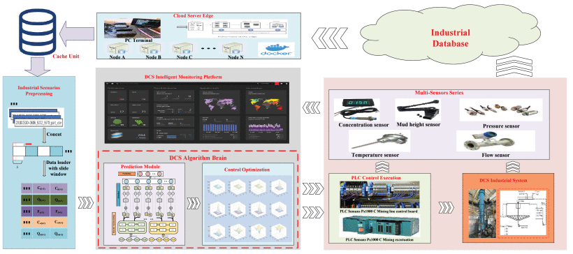
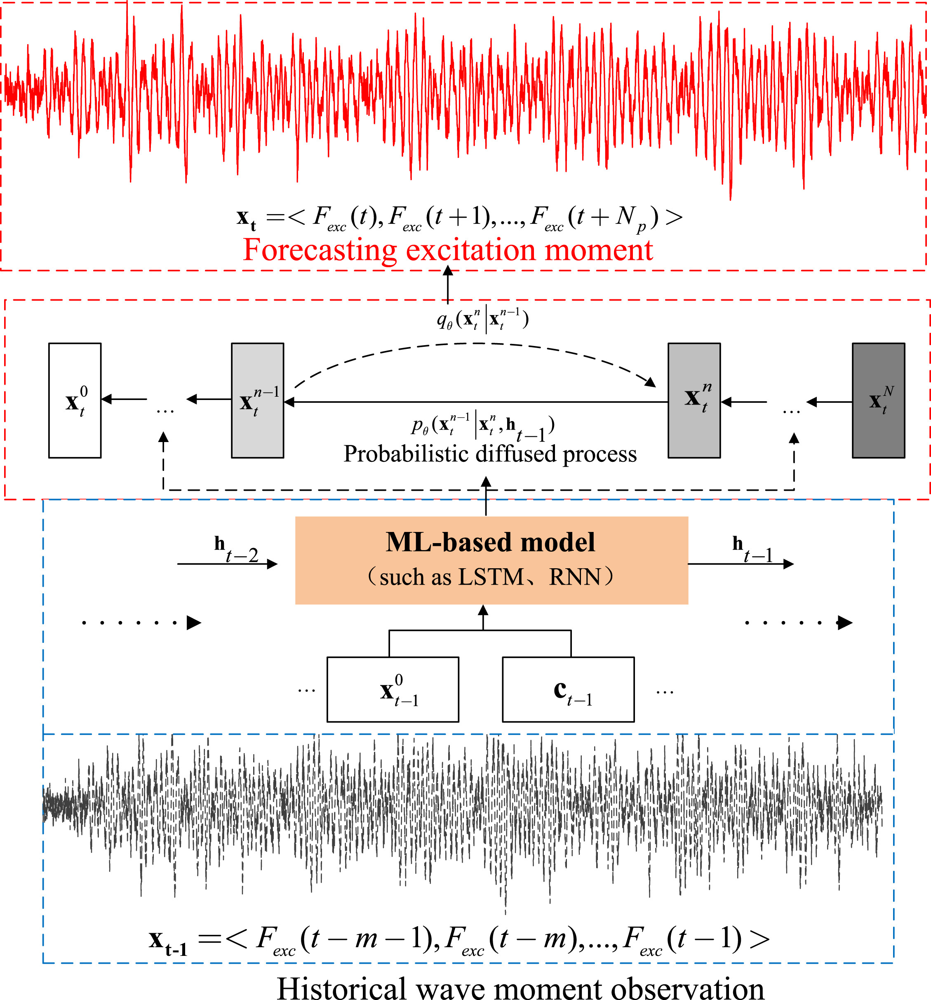
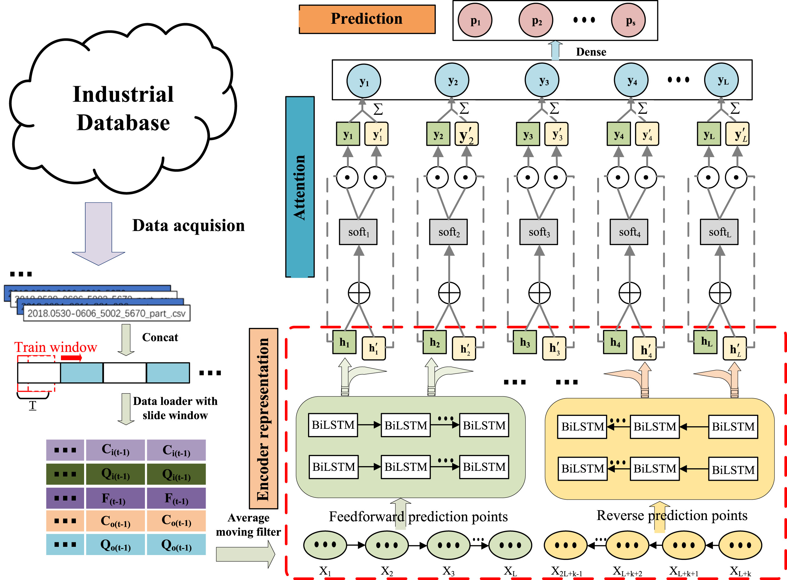
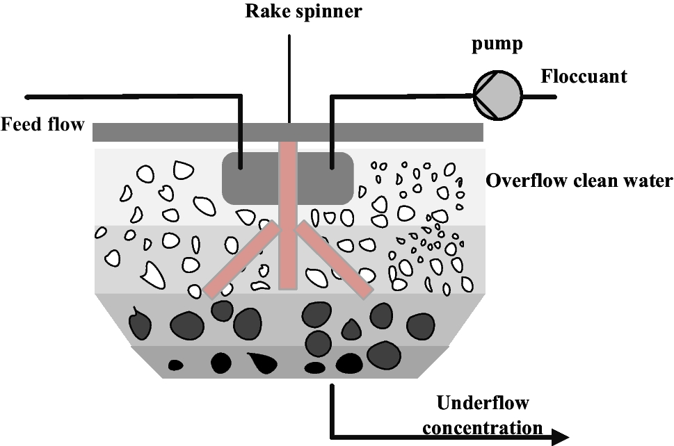
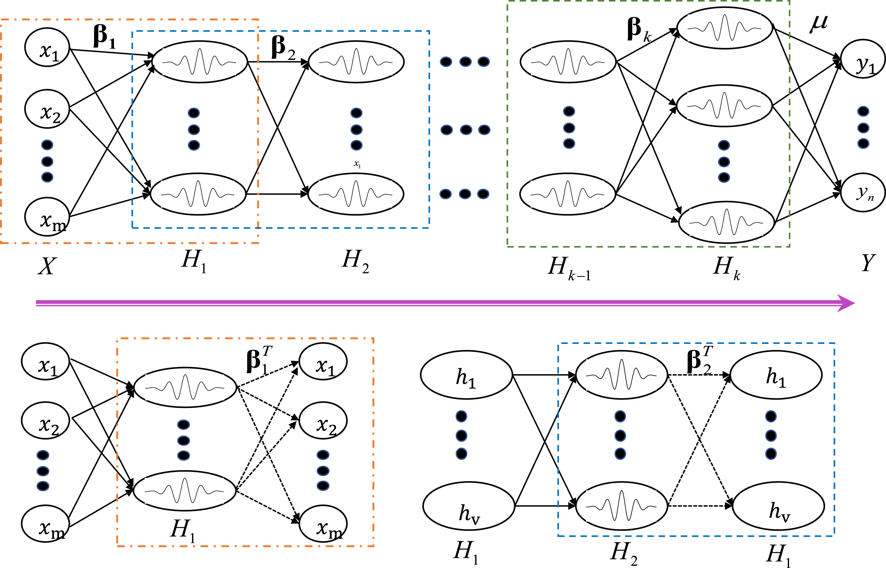
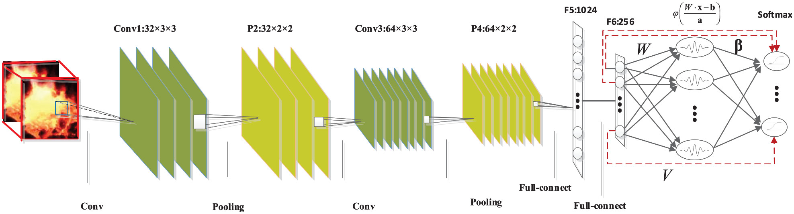
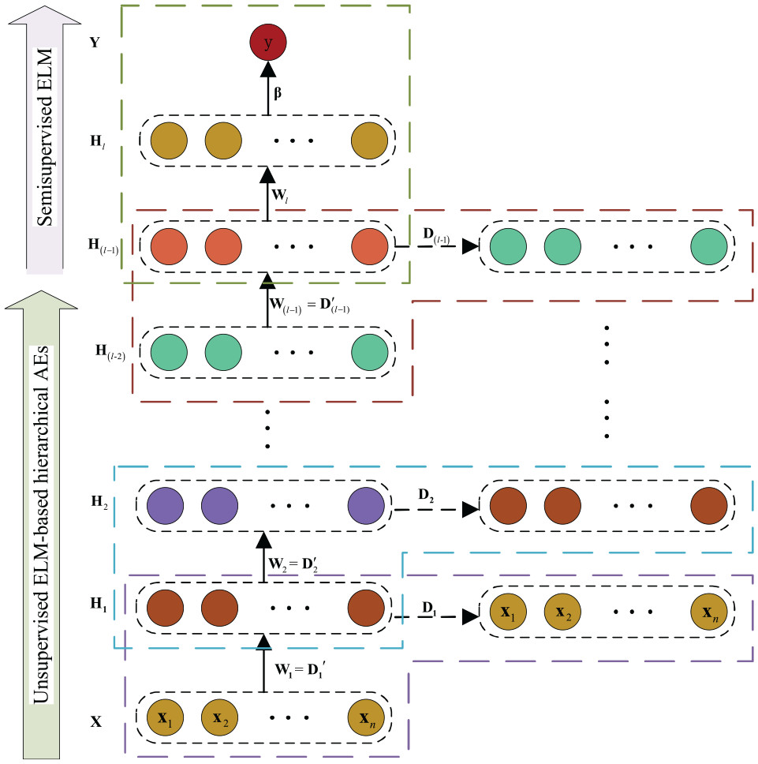
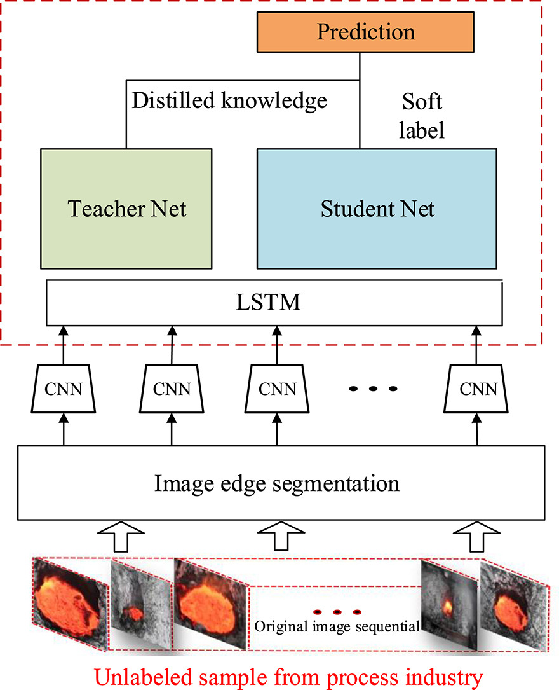

Dr. Yongxiang Lei (雷勇祥) |
News
- [2025.8] Serving as the guest editor of the Applied Sciences: Time Series Forecasting and Soft Sensing for Climate Modeling and Applications!
Research Interest
My research interests lie in trans-disciplinary industrial applications of deep learning methods, especially for prediction, soft sensing, control and renewable energy. I have authored more than 20 peer-reviewed articles in international scientific journals such as Applied Soft Computing (IF=6.6), IEEE TIM (IF=5.6), Control Engineering Practice (IF=5.4), Journal of Process Control (IF=3.3), ISA Transactions (IF=6.5) and Energy (IF=9.0), which have been cited 300+ times indexed by the Web of Science with the h-index of 7. Nine of my first-authored papers have been selected as the ESI Highly Cited Paper (Top 1%) and two as the ESI Hot Paper (Top 0.1%). Currently, my research topics include:
- Artificial Intelligence
- Deep Learning for Prediction
- Soft Sensing in Deep Learning
- Processing Modeling and Control
- Model Predictive Control
- Offshore Renewable Energy
- Real-Time Wave Prediction
- Reinforcement Learning
- Wind Turbine Control
Education
- 2021.01-Present Ph.D. in School of Engineering, University of Warwick
- 2020.10-2024.06 Ph.D. in Department of Mechanicial Engineering, Politecnico di Milano
- 2017.09-2020.06 M.E. in School of Automation, Central South University
- 2013.09-2017.06 B.E. in School of Electronical Engineering, University of South China
Publications
Full-scale Prediction Control Framework:
 |
Intelligent Optimal Framework for the Industrial Mining Plant-Wide Prediction Control Y. Lei IEEE Transactions on Instructmentation and Measurement (SCI Q1 Top, IF=5.6) [Link] [PDF] [BibTeX] |
Nonlinear Wave Forecasting Control:
 |
A Wave Forecasting Method Based on Probabilistic Diffusion LSTM Network for Model Predictive Control of Wave Energy Converters Y. Lei Applied Soft Computing (SCI Q1 Top, IF=7.2) [Link] [PDF] [BibTeX] |
Prediction and Soft Sensing:
 |
DualLSTM: A Novel Key-Quality Prediction for a Hierarchical Cone Thickener Y. Lei and R. Hamid. Control Engineering Practice (SCI Q1 Top, IF=5.4) [Link] [PDF] [BibTeX] |
 |
Underflow Concentration Prediction Based on Improved Dual Bidirectional LSTM for Hierarchical Cone Thickener System Y. Lei and R. Hamid. The International Journal of Advanced Manufacturing Technology (SCI Q2, IF=9.0) [Link] [PDF] [BibTeX] |
Processes Industry Modeling:
   Self-Supervised Learning:
 Semi-Supervised Learning: Probabilistic Learning: 3D Digital Twin: Reinforcement Learning:
Conference:
Processes Soft Modeling Based on Stacked Autoencoders and Wavelet Extreme Learning Machine for Aluminum Plant-wide Application
Y. Lei, R. Hamid, L. Cen, X. Chen, and Y. Xie.
Control Engineering Practice (SCI Q1 Top, IF=5.4)
[Link]
[PDF]
[BibTeX]
An Improved Cell Situation Identification Approach with Convolutional Neural Network and Wavelet Extreme Learning Machine
Y. Lei, X. Chen, and Y. Xie.
Proceedings of the Institution of Mechanical Engineers, Part I: Journal of Systems and Control Engineering (SCI Q1 Top, IF=8.2)
[Link]
[PDF]
[Code]
[BibTeX]
Manifold Semi-Supervised Learning for Aluminum Electrolysis Temperature Identification Based on Regularized Hierarchical Extreme Learning Machine
Y. Lei, F, Liu, R. Hamid, and X. Chen.
Proceedings of the Institution of Mechanical Engineers, Part I: Journal of Systems and Control Engineering (SCI Q1 Top, IF=8.2)
[Link]
[PDF]
[Code]
[BibTeX]
A Self-Supervised Temporal Temperature Prediction Method Based on Dilated Contrastive Learning
L. Wang, Y. Lei, X. Chen, Y. Xie, and L. Cen.
Journal of Process Control (SCI Q1 Top, IF=12.7)
[Link]
[PDF]
[Code]
[BibTeX]
[JPC Best Paper 2022]
† Equal Contribution * Corresponding Author ESI Highly Cited Paper ESI Hot Paper
Journal Reviewers
Awards